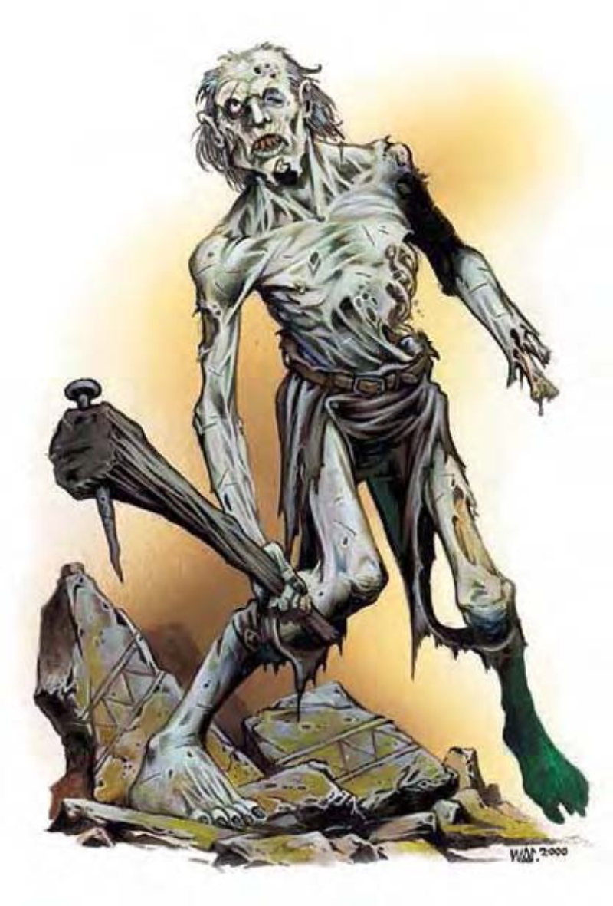

僵尸是受黑暗且邪恶的魔法复活的尸体。这些缺乏心智的自行生物蹒跚而行，毫无畏惧、毫不犹豫地执行着自其创造者下达的指令。
这些僵尸的外表大多不尽人意。它们被人拖离坟墓时身上还系挂着残破不堪的殓衣残片，腐烂的痕迹与蛆虫的咬痕混杂着遍布在身体的各处。一股浓烈的、属于死亡的恶臭气息沉郁的凝积在它们周围的空气之中。
由于它们毫无智力可言，给予新生僵尸的指令必须相当简单，例如“杀死进入这一房间的任何人”。
创造僵尸“僵尸”是一项可以后天获取的模板，可被附加于任何拥有骨骼系统的实体生物（不死生物除外）之上（下称基础生物）。
体型与种类：该名生物的种类变为不死生物。它将保留所有亚种，阵营亚种（例如善良）以及用以标的物种的亚种（例如地精或是爬虫）除外。它不会获得增强亚种。除非在此另有说明，否则它将拥有基础生物的所有数据及其特殊能力。
生命骰：移除所有来自职业等级的生命骰（直至留下最后1个），将剩余生命骰翻倍，并将之提升至d12。如果基础生物的生命骰多于10个（不包括来自经验累计所得的部分），则其无法通过法术操纵死尸制成僵尸。
速度：如果基础生物能够飞行，则其机动性降至笨拙。
防御等级：天生防御加值根据僵尸体型提升：
| 超小型或更小 | +0 |
|---|---|
| 小型 | +1 |
| 中型 | +2 |
| 大型 | +3 |
| 超大型 | +4 |
| 巨型 | +7 |
| 超巨型 | +11 |
基本攻击：僵尸的基本攻击加值等于其生命骰的1/2。
攻击：僵尸保留基础生物的所有天生武器、人造武器攻击以及武器擅长。僵尸额外获得一次挥击攻击。
伤害：天生武器与人造武器照常造成伤害。挥击攻击所造成的伤害取决于僵尸的体型（如果基础生物的挥击伤害更高，则适用这一数值）。
| 超微型 | 1 |
|---|---|
| 微型 | 1d2 |
| 超小型 | 1d3 |
| 小型 | 1d4 |
| 中型 | 1d6 |
| 大型 | 1d8 |
| 超大型 | 2d6 |
| 巨型 | 2d8 |
| 超巨型 | 4d6 |
特殊攻击：僵尸不会保留基础生物的任何特殊攻击。
特殊能力：僵尸将会失去基础生物的绝大多数特殊能力。它仅保留那些能够提升其近战或是远程攻击的特异能力。僵尸将会获得以下特殊能力。
伤害减免5/挥砍：僵尸是一团行动迟缓的血肉。
仅限单一动作Single Actions Only（Ex）：僵尸拥有相对低下的反射能力，每轮只能执行一个移动动作或是攻击动作。僵尸可以在同一轮内以其速度上限移动的同时发起攻击，但仅在其尝试冲锋时才可执行这一行为。
豁免：基本豁免加值为强韧+1/3HD，反射+1/3HD，意志+1/2HD+2。
属性：僵尸的力量增加+2，敏捷减少2，它不具备体质或是智力属性，它的感知变为10，魅力变为1。
技能：僵尸没有技能。
专长：僵尸将会失去基础生物的所有专长并获得健壮。
区域：任意陆地或地下。
组织：任意。
挑战等级：取决于其生命骰，如下所示：
| 1/2 | 1/8 |
|---|---|
| 1 | 1/4 |
| 2 | 1/2 |
| 4 | 1 |
| 6 | 2 |
| 8-10 | 3 |
| 12-14 | 4 |
| 15-16 | 5 |
| 18-20 | 6 |
宝物：无。
阵营：总是中立邪恶。
进化：如同基础生物，但其生命骰翻倍（最高20），或-（*即留空符号，表示无此进化，照见等级调整处的“-”同一用法）如果基础生物的进化视人物等级而定。
等级调整：-。
| 狗头人僵尸 （Kobold Zombie） 小型不死生物 | 人类平民僵尸 （Human Commoner Zombie） 中型不死生物 | 战蜥人僵尸 （Troglodyte Zombie） 中型不死生物 | |
|---|---|---|---|
| 生命骰： | 2d12+3（16hp） | 2d12+3（16hp） | 4d12+3（29hp） |
| 先攻： | +0 | -1 | -2 |
| 速度： | 30英尺（6格；不能奔跑） | 30英尺（6格；不能奔跑） | 30英尺（6格；不能奔跑） |
| 防御等级： | 13（+1体型，+2天生），接触11，措手不及13 | 11（-1敏捷，+2天生），接触9，措手不及11 | 16（-2敏捷，+8天生），接触8，措手不及16 |
| 基本攻击/ 擒抱： | +1/-4 | +1/+2 | +2/+3 |
| 攻击： | 矛+1近战（1d6-1/*3）或挥击+1近战（1d4-1）或轻弩+2远程（1d6/19-20） | 挥击+2近战（1d6+1）或木棍+2近战（1d6+1）或标枪+0远程（1d6+1） | 巨木棒+3近战（1d10+1）或啮咬+3近战（1d4+1）或挥击+3近战（1d6+1） |
| 全力攻击： | 矛+1近战（1d6-1/*3）或挥击+1近战（1d4-1）或轻弩+2远程（1d6/19-20） | 挥击+2近战（1d6+1）或木棍+2近战（1d6+1）或标枪+0远程（1d6+1） | 巨木棒+3近战（1d10+1）或啮咬+3近战（1d4+1）或挥击+3近战（1d6+1） |
| 占据/触及： | 5英尺/5英尺 | 5英尺/5英尺 | 5英尺/5英尺 |
| 特殊攻击： | - | - | - |
| 特殊能力： | 仅限单一动作，伤害减免5/挥砍，黑暗视觉60英尺，不死生物特性 | 仅限单一动作，伤害减免5/挥砍，黑暗视觉60英尺，不死生物特性 | 仅限单一动作，伤害减免5/挥砍，黑暗视觉60英尺，不死生物特性 |
| 豁免： | 强韧+0，反射+0，意志+3 | 强韧+0，反射-1，意志+3 | 强韧+1，反射-1，意志+4 |
| 属性： | 力量8，敏捷11，体质-，智力-，感知10，魅力1 | 力量12，敏捷8，体质-，智力-，感知10，魅力1 | 力量12，敏捷7，体质-，智力-，感知10，魅力1 |
| 技能： | - | - | - |
| 专长： | 健壮 | 健壮 | 健壮 |
| 区域： | 温带森林 | 任意 | 地下 |
| 组织： | 任意 | 任意 | 任意 |
| 挑战等级： | 1/2 | 1/2 | 1 |
| 宝物： | 无 | 无 | 无 |
| 阵营： | 总是中立邪恶 | 总是中立邪恶 | 总是中立邪恶 |
| 进化： | 无 | 无 | 无 |
| 等级调整： | - | - | - |
| 熊地精僵尸 （Bugbear Zombie） 中型不死生物 | 食人魔僵尸 （Ogre Zombie） 大型不死生物 | 牛头人僵尸 （Minotaur Zombie） 大型不死生物 | |
|---|---|---|---|
| 生命骰： | 6d12+3（42hp） | 8d12+3（55hp） | 12d12+3（81hp） |
| 先攻： | +0 | -2 | -1 |
| 速度： | 30英尺（6格；不能奔跑） | 40英尺（8格；不能奔跑） | 30英尺（6格；不能奔跑） |
| 防御等级： | 16（+5天盛，+1轻型木盾），接触10，措手不及16 | 15（-1体型，-2敏捷，+8天生），接触7，措手不及15 | 16（-1体型，-1敏捷，+8天生），接触8，措手不及16 |
| 基本攻击/ 擒抱： | 3+/+6 | +4/+14 | +6/+15 |
| 攻击： | 钉头锤+6近战（1d8+3）或挥击+6近战（1d6+4）或标枪+3远程（1d6+2） | 巨木棒+9近战（2d8+9）或挥击+9近战（1d8+9）或标枪+1远程（1d8+6） | 巨斧+10近战（3d6+7/*3）或抵撞+10近战（1d8+5）或挥击+10近战（1d8+5） |
| 全力攻击： | 钉头锤+6近战（1d8+3）或挥击+6近战（1d6+4）或标枪+3远程（1d6+2） | 巨木棒+9近战（2d8+9）或挥击+9近战（1d8+9）或标枪+1远程（1d8+6） | 巨斧+10近战（3d6+7/*3）或抵撞+10近战（1d8+5）或挥击+10近战（1d8+5） |
| 占据/触及： | 5英尺/5英尺 | 10英尺/10英尺 | 10英尺/10英尺 |
| 特殊攻击： | - | - | - |
| 特殊能力： | 仅限单一动作，伤害减免5/挥砍，黑暗视觉60英尺，不死生物特性 | 仅限单一动作，伤害减免5/挥砍，黑暗视觉60英尺，不死生物特性 | 仅限单一动作，伤害减免5/挥砍，黑暗视觉60英尺，不死生物特性 |
| 豁免： | 强韧+2，反射+2，意志+5 | 强韧+2，反射+0，意志+6 | 强韧+4，反射+3，意志+8 |
| 属性： | 力量17，敏捷10，体质-，智力-，感知10，魅力1 | 力量23，敏捷6，体质-，智力-，感知10，魅力1 | 力量21，敏捷8，体质-，智力-，感知10，魅力1 |
| 技能： | - | - | - |
| 专长： | 健壮 | 健壮 | 健壮 |
| 区域： | 温带山地 | 温带丘陵 | 地下 |
| 组织： | 任意 | 任意 | 任意 |
| 挑战等级： | 2 | 3 | 4 |
| 宝物： | 无 | 无 | 无 |
| 阵营： | 总是中立邪恶 | 总是中立邪恶 | 总是中立邪恶 |
| 进化： | 无 | 无 | 无 |
| 等级调整： | - | - | - |
| 双足飞龙僵尸 （Wyvern Zombie） 大型不死生物 | 土巨怪僵尸 （Umber Hulk Zombie） 大型不死生物 | 灰袋兽僵尸 （Gray Render Zombie） 大型不死生物 | |
|---|---|---|---|
| 生命骰： | 14d12+3（94hp） | 16d12+3（107hp） | 20d12+3（133hp） |
| 先攻： | +0 | +0 | -1 |
| 速度： | 20英尺（4格；不能奔跑），飞行60英尺（不良） | 20英尺（4格；不能奔跑），掘穴20英尺 | 30英尺（6格；不能奔跑） |
| 防御等级： | 20（-2体型，+12天生），接触8，措手不及20 | 19（-1体型，+10天生），接触0，措手不及19 | 16（-1体型，-1敏捷，+8天生），接触8，措手不及16 |
| 基本攻击/ 擒抱： | +7/+16 | +8/+19 | +10/+21 |
| 攻击： | 挥击+11近战（2d6+7）或爪抓+11近战（2d6+5） | 爪抓+14近战（2d4+7）或啮咬+14近战（2d8+3） | 啮咬+16近战（2d6+7）或挥击+16近战（1d8+10） |
| 全力攻击： | 挥击+11近战（2d6+7）或爪抓+11近战（2d6+5） | 爪抓+14近战（2d4+7）或啮咬+14近战（2d8+3） | 啮咬+16近战（2d6+7）或挥击+16近战（1d8+10） |
| 占据/触及： | 10英尺/5英尺 | 10英尺/10英尺 | 10英尺/10英尺 |
| 特殊攻击： | - | - | - |
| 特殊能力： | 仅限单一动作，伤害减免5/挥砍，黑暗视觉60英尺，不死生物特性 | 仅限单一动作，伤害减免5/挥砍，黑暗视觉60英尺，不死生物特性 | 仅限单一动作，伤害减免5/挥砍，黑暗视觉60英尺，不死生物特性 |
| 豁免： | 强韧+4，反射+4，意志+9 | 强韧+5，反射+5，意志+10 | 强韧+6，反射+5，意志+12 |
| 属性： | 力量21，敏捷10，体质-，智力-，感知10，魅力1 | 力量25，敏捷11，体质-，智力-，感知10，魅力1 | 力量25，敏捷8，体质-，智力-，感知10，魅力1 |
| 技能： | - | - | - |
| 专长： | 健壮 | 健壮 | 健壮 |
| 区域： | 温暖丘陵 | 地下 | 温带沼泽 |
| 组织： | 任意 | 任意 | 任意 |
| 挑战等级： | 4 | 5 | 6 |
| 宝物： | 无 | 无 | 无 |
| 阵营： | 总是中立邪恶 | 总是中立邪恶 | 总是中立邪恶 |
| 进化： | 16-20HD（超大型） | 18-20HD（大型） | 无 |
| 等级调整： | - | - | - |